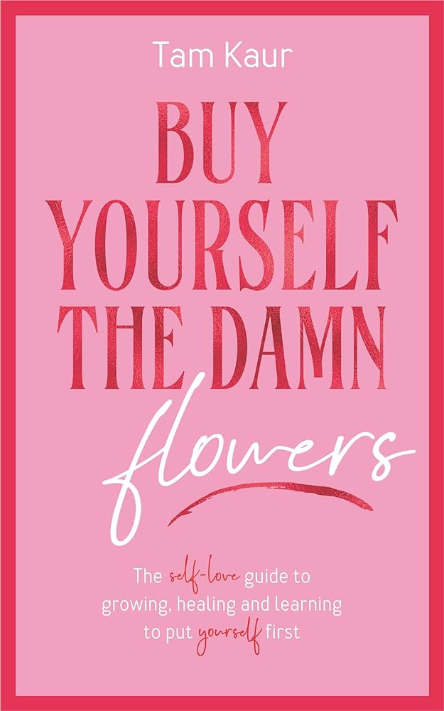

"Buy Yourself the Damn Flowers" by Tam Kaur is a self-love guide aimed at empowering women to prioritize their own well-being and happiness. Drawing from her personal experiences with unhealthy relationships, Kaur emphasizes the importance of self-care and self-acceptance.
Key Themes
Self-Love Journey: Kaur shares her journey from a series of disappointing relationships to a focus on self-love. She encourages readers to take themselves on dates, buy themselves flowers, and engage in activities that bring joy and fulfillment.
Practical Guidance: The book is packed with actionable advice and methods to help women cultivate a deep and lasting love for themselves.
Kaur provides tools for setting boundaries, escaping the need for external validation, and building confidence.
Transformative Tools: Each chapter includes exercises and "homework" designed to help readers reflect on their lives, transform pain into power, and maintain self-love while navigating relationships with others.
Empowerment: Kaur aims to equip women with the clarity and skills needed to reject societal pressures and embrace their true selves. The book is intended for anyone—whether single, in a relationship, or healing from past experiences—who seeks to become the best version of themselves.
Conclusion
"Buy Yourself the Damn Flowers" is a comprehensive guide that advocates for self-love as a foundation for happiness and fulfillment. By encouraging women to prioritize their own needs and desires, Kaur aims to inspire a movement towards greater self-acceptance and empowerment.
The message is clear: every woman deserves to cultivate a lasting love for herself.